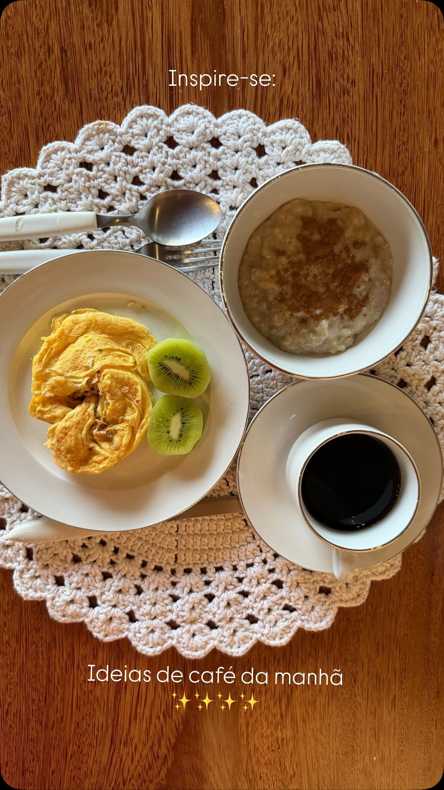
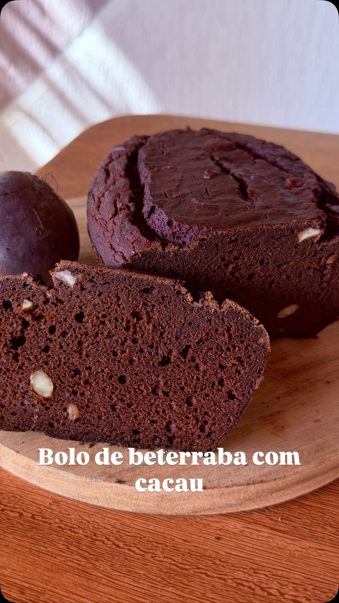
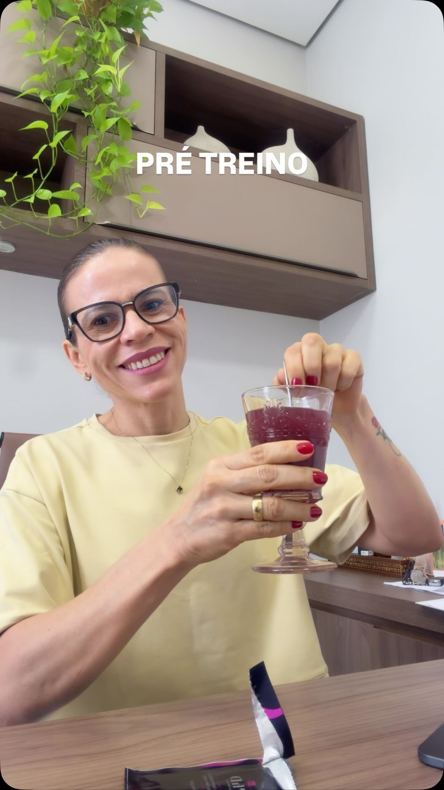

Comida de verdade,cuidado de perto.
Sueli Ribeiro, nutricionista clínica em Rondônia. Acompanhamento individual para emagrecimento, diabetes, tireoide, intestino, fígado e intolerâncias.
CRN7/RO 17285 · Atendimento individual



Cada plano começa pela sua história, pelos seus exames e pela rotina que você tem de verdade. Sem dieta da moda e sem culpa: comida de verdade, ciência e acompanhamento de perto.
Onde eu posso
te ajudar
Seis frentes de cuidado clínico, sempre ajustadas aos seus exames e à sua rotina.

Prazer,
Sueli Ribeiro.
Nutricionista clínica, com atendimento individual e um jeito simples de olhar para a alimentação.
No consultório, o plano é construído com você: o que você gosta de comer, o que cabe no seu bolso e na sua semana. No Instagram, ela mostra isso na prática, com pratos coloridos, receitas possíveis e informação com base científica.
- Registro
- CRN7/RO 17285
- Atuação
- Nutrição clínica
- Região
- Rondônia
- @nutri.sueliribeiro
Do primeiro “oi”
ao acompanhamento
Quatro etapas, no seu ritmo.
-
Você manda uma mensagem
Conta o que está buscando, tira as dúvidas e escolhe o melhor dia para a consulta.
Agendar consulta Sueli RibeiroNutricionistaOlá, Sueli! Vim pelo site e gostaria de agendar uma consulta.
Sueli RibeiroNutricionistaOlá, Sueli! Vim pelo site e gostaria de agendar uma consulta. -
Avaliação inicial
Conversa detalhada sobre saúde, rotina, histórico e exames, com bioimpedância quando indicada.

-
Plano feito para você
Alimentos que cabem no seu gosto, no seu bolso e na sua semana, com materiais práticos como a lista de compras.
-
Acompanhamento e ajustes
Retornos para acompanhar a evolução, responder dúvidas e ajustar o plano com base no que funciona para você.

Prático, gostoso
e sem complicação
Informação simples,
escolhas melhores
Conteúdo educativo. Não substitui consulta.
Mais dicas no InstagramQuem já fez
o acompanhamento
Antes da
primeira consulta
Não encontrou o que procurava? Mande uma mensagem.
Agendar consultaVamos
conversar?
Mande uma mensagem contando o que você procura. A Sueli responde com os próximos horários e tudo o que você precisa saber para a primeira consulta.
- RegistroCRN7/RO 17285
- RegiãoRondônia